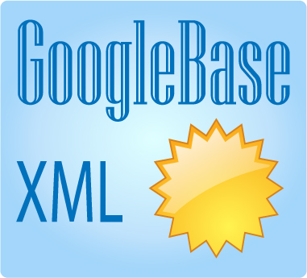

News
We are really pleased to report that a respected Joomla author has rated our Master User plugin among the top 25 Joomla Extensions. It is very nice to be listed among such esteemed company as JCE, Akeeba Backup and Admin Tools Pro.
It is a really simple plugin, but it obviously fulfills a need. It allows selected administrator users to log into the front end of the Joomla site as if they were another registered user. It can be very useful if the user is experiencing difficulties with the site, because it means that the administrator can experience the site as if they were that user. We often use it in that way ourselves.
We have not actually developed the plugin much in recent years, beyond ensuring that it remains secure and compatible with the latest releases of Joomla. We have always resisted making it more complicated than it needs to be, preferring to keep it as a simple plugin that does one job well. In that way we can continue to keep it as a free download.
Still it may be that there is a place for a 'pro' version that does more. In that case we would be interested to hear from users if there are any additional features that would be really useful. If you have any suggestions please let us know, through our support forum, or facebook page.

We are happy to announce a new release, version 4.6.28, of our Google Product Feed for Virtuemart, GooglebaseXML. This extension for Joomla and Virtuemart automatically generates a feed which can be uploaded to your Google Merchant centre account for use in Google advertising and Google Shopping.
Version 4.6.28 is a maintenance release, which adds a couple of new features:-
Adds a new custom tag translations option in the feed parameters
You can supply the promotion id either using a product override, or through a custom field.
Previously the only way to translate tag names was through supplying a language override in the Joomla languages manager. It worked, but it was a bit inflexible as a system, because it did not allow you a one-off renaming of a tag, applicable to a particular feed only. Now you can do exactly that, simply supply a custom tag name translation in the feed options, see the screen capture here: supplying a custom tag name
To use a custom field to supply the promotion id, :-
Create a new string custom field in Virtuemart
In the feed options, select this field for the 'Promotion Id' option
In the Virtuemart product editor, attach this field to the product, supply the value for the promotion id.
We have a new Amazon plugin: AmazonWS Content Plugin Light is available as a free download here.
This content plugin allows you to embed product information and reviews and links from the Amazon Product Advertising API. A simple short-code allows you to easily insert Amazon products directly into your Joomla articles, or into any other extension articles that support Joomla content plugins: this includes Easy Blog and K2.
As this is the free version of the plugin, it includes simplified features compared with our commercial version. It is still a fully functioning plugin, and if you just want to add a few Amazon products to your site it will do that very well for you. If you are interested in the commercial version of the plugin you can use this version as a test to see how well the system works for you.
Like the paid versions of these extensions, it is compatible with Joomla 3.7+ and 4.